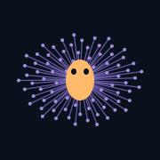

A whole fly connectome, living locally on your iPhone.
Version 0.1.0-1 · rootless iOS 16 · about 75 MB download, 206 MB installed.
This installs as a separate app alongside Mote.
Experimental: real wiring with authored activity equations and body controls. No learning or recovered memories. The brain map plots a sample; every cell is simulated. Launch and GPU / Metal mode confirmed on Franky’s iPhone XR by direct user report. CPU/GPU equivalence and control checks were performed on the Mac and simulator; XR performance has not been measured.